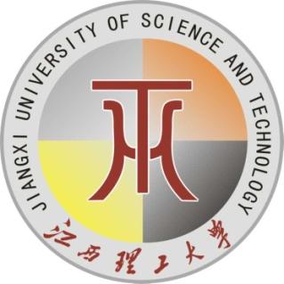

PROFILE
关于我
About我的背景、研究兴趣与教育经历。
简介
我是 xkgc__，吉林大学人工智能专业硕士研究生（研0）。目前专注于大模型（LLM）的 Agent、持续学习与后训练方向，希望在大模型的能力边界与实用落地之间做一些有意思的探索。平时喜欢动手实践，把学到的知识和踩过的坑沉淀成文字。这个主页记录我的技术学习、项目实践与思考，也欢迎同好交流。
研究方向
- Agent 关注大模型智能体的推理、规划与工具调用，以及多智能体协作。
- Continual Learning 关注模型在动态数据流上的持续学习，缓解灾难性遗忘。
- Post-training 关注大模型的对齐与后训练技术，提升模型能力与可控性。
教育经历
-
 2027 级 吉林大学 · 人工智能 硕士研究生（研0）
2027 级 吉林大学 · 人工智能 硕士研究生（研0） -

2023 级 江西理工大学 · 软件工程 本科
实习经历
正在准备中
期待开启第一段实习，未来将在这里记录实践与收获。